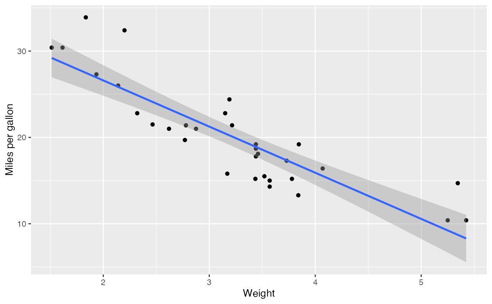

Introduction to tidyllm
tidyllm is an R package designed to provide a unified interface for interacting with various large language model APIs. This vignette will guide you through the basic setup and usage of tidyllm.
Installation
To install tidyllm from CRAN , use:
install.packages("tidyllm")Or install a current development version directly from GitHub using devtools:
# Install devtools if not already installed
if (!requireNamespace("devtools", quietly = TRUE)) {
install.packages("devtools")
}
# Install TidyLLM from GitHub
devtools::install_github("edubruell/tidyllm")Setting up API Keys or ollama
Before using tidyllm, you need to set up API keys for the services you plan to use. Here’s how to set them up for different providers:
- For Claude models you can get an API key in the Anthropic Console:
Sys.setenv(ANTHROPIC_API_KEY = "YOUR-ANTHROPIC-API-KEY")- For ChatGPT you can obtain an API key by signing up at OpenAI and set it with:
Sys.setenv(OPENAI_API_KEY = "YOUR-OPENAI-API-KEY")- For Mistral you can set the API key on the Mistral console page and set it by
Sys.setenv(MISTRAL_API_KEY = "MISTRAL-API-KEY-GOES-HERE")- For groq (not be confused with grok) you can setup you API keys in the Groq Console:
Sys.setenv(GROQ_API_KEY = "YOUR-GROQ-API-KEY")Alternatively, you can set these keys in your .Renviron
file for persistent storage. For this, execute
usethis::edit_r_environ(), and add a line with with an API
key in this file, for example:
ANTHROPIC_API_KEY="YOUR-ANTHROPIC-API-KEY"If you want to work with local large lange models via
ollama you need to install it from the official project website. Ollama sets
up a local large language model server that you can use to run
open-source models on your own devices.
Basic Usage
Let’s start with a simple example using tidyllm to interact with different language models:
library(tidyllm)
# Start a conversation with Claude
conversation <- llm_message("What is the capital of France?") |>
claude()
#Standard way that llm_messages are printed
conversation## Message History:
## system: You are a helpful assistant
## --------------------------------------------------------------
## user: What is the capital of France?
## --------------------------------------------------------------
## assistant: The capital of France is Paris.
## --------------------------------------------------------------
# Continue the conversation with ChatGPT
conversation <- conversation |>
llm_message("What's a famous landmark in this city?") |>
chatgpt()
last_reply(conversation)## [1] "A famous landmark in Paris is the Eiffel Tower."Sending Images to Models
tidyllm also supports sending images to multimodal models. Let’s send
this picture here: 
Here we let ChatGPT guess where the picture was made:
# Describe an image using a llava model on ollama
image_description <- llm_message("Describe this picture? Can you guess where it was made?",
.imagefile = "picture.jpeg") |>
chatgpt(.model = "gpt-4o")
# Get the last reply
last_reply(image_description)## [1] "The picture shows a beautiful landscape with a lake, mountains, and a town nestled below. The sun is shining brightly, casting a serene glow over the water. The area appears lush and green, with agricultural fields visible. \n\nThis type of scenery is reminiscent of northern Italy, particularly around Lake Garda, which features similar large mountains, picturesque water, and charming towns."Adding PDFs to messages
The llm_message() function also supports extracting text
from PDFs and including it in the message. This allows you to easily
provide context from a PDF document when interacting with an AI
assistant.
To use this feature, you need to have the pdftools
package installed. If it is not already installed, you can install it
with:
install.packages("pdftools")To include text from a PDF in your prompt, simply pass the file path
to the .pdf argument of the chat function:
llm_message("Please summarize the key points from the provided PDF document.",
.pdf = "die_verwandlung.pdf") |>
chatgpt(.model = "gpt-4o-mini")## Message History:
## system: You are a helpful assistant
## --------------------------------------------------------------
## user: Please summarize the key points from the provided PDF document.
## -> Attached Media Files: die_verwandlung.pdf
## --------------------------------------------------------------
## assistant: Here are the key points from the provided PDF document 'Die Verwandlung' by Franz Kafka:
##
## 1. The story centers around Gregor Samsa, who wakes up one morning to find that he has been transformed into a giant insect-like creature.
##
## 2. Gregor's transformation causes distress and disruption for his family. They struggle to come to terms with the situation and how to deal with Gregor in his new state.
##
## 3. Gregor's family, especially his sister Grete, initially tries to care for him, but eventually decides they need to get rid of him. They lock him in his room and discuss finding a way to remove him.
##
## 4. Gregor becomes increasingly isolated and neglected by his family. He becomes weaker and less mobile due to his injuries and lack of proper care.
##
## 5. Eventually, Gregor dies, and his family is relieved. They then begin to make plans to move to a smaller, more affordable apartment and start looking for new jobs and opportunities.
## --------------------------------------------------------------The package will automatically extract the text from the PDF and
include it in the prompt sent to the an API. The text will be wrapped in
<pdf> tags to clearly indicate the content from the
PDF:
Please summarize the key points from the provided PDF document.
<pdf filename="example_document.pdf">
Extracted text from the PDF file...
</pdf>Sending R Outputs to Language Models
You can automatically include R code outputs in your prompts.
llm_message() has an optional argument .f in
which you can specify a (anonymous) function, which will be run and
which console output will be captured and appended to the message when
you run it.
In addition you can use .caputre_plot to send the last
plot pane to a model.
## ── Attaching core tidyverse packages ──────────────────────── tidyverse 2.0.0 ──
## ✔ dplyr 1.1.4 ✔ readr 2.1.5
## ✔ forcats 1.0.0 ✔ stringr 1.5.1
## ✔ ggplot2 3.5.1 ✔ tibble 3.2.1
## ✔ lubridate 1.9.3 ✔ tidyr 1.3.1
## ✔ purrr 1.0.2
## ── Conflicts ────────────────────────────────────────── tidyverse_conflicts() ──
## ✖ dplyr::filter() masks stats::filter()
## ✖ dplyr::lag() masks stats::lag()
## ℹ Use the conflicted package (<http://conflicted.r-lib.org/>) to force all conflicts to become errors
# Create a plot for the mtcars example data
ggplot(mtcars, aes(wt, mpg)) +
geom_point() +
geom_smooth(method = "lm", formula = 'y ~ x') +
labs(x="Weight",y="Miles per gallon")
Now we can send the plot and data summary to a language model:
library(tidyverse)
llm_message("Analyze this plot and data summary:",
.capture_plot = TRUE, #Send the plot pane to a model
.f = ~{summary(mtcars)}) |> #Run summary(data) and send the output
claude()## Message History:
## system: You are a helpful assistant
## --------------------------------------------------------------
## user: Analyze this plot and data summary:
## -> Attached Media Files: file1568f6c1b4565.png, RConsole.txt
## --------------------------------------------------------------
## assistant: Based on the plot and data summary provided, here's an analysis:
##
## 1. Relationship between Weight and MPG:
## The scatter plot shows a clear negative correlation between weight (wt) and miles per gallon (mpg). As the weight of the car increases, the fuel efficiency (mpg) decreases.
##
## 2. Linear Trend:
## The blue line in the plot represents a linear regression fit. The downward slope confirms the negative relationship between weight and mpg.
##
## 3. Data Distribution:
## - The weight of cars in the dataset ranges from 1.513 to 5.424 (likely in thousands of pounds).
## - The mpg values range from 10.40 to 33.90.
##
## 4. Variability:
## There's some scatter around the regression line, indicating that while weight is a strong predictor of mpg, other factors also influence fuel efficiency.
##
## 5. Other Variables:
## While not shown in the plot, the summary statistics provide information on other variables:
## - Cylinder count (cyl) ranges from 4 to 8, with a median of 6.
## - Horsepower (hp) ranges from 52 to 335, with a mean of 146.7.
## - Transmission type (am) is binary (0 or 1), likely indicating automatic vs. manual.
##
## 6. Model Fit:
## The grey shaded area around the regression line represents the confidence interval. It widens at the extremes of the weight range, indicating less certainty in predictions for very light or very heavy vehicles.
##
## 7. Outliers:
## There are a few potential outliers, particularly at the lower and higher ends of the weight spectrum, that deviate from the general trend.
##
## In conclusion, this analysis strongly suggests that weight is a significant factor in determining a car's fuel efficiency, with heavier cars generally having lower mpg. However, the presence of scatter in the data indicates that other factors (possibly related to engine characteristics, transmission type, or aerodynamics) also play a role in determining fuel efficiency.
## --------------------------------------------------------------Getting the last reply (as raw text or structured data)
You can retrieve the last assistant reply from a message history with
last_reply(). Typically, it returns a character vector with
the text of the assistant’s reply. However, if API functions have
requested replies in JSON
mode, it can directly validate and return them as structured output. The
function handles these different response types automatically.
If a JSON reply is detected, it returns a list with the following fields:
-
parsed_content: The parsed JSON content (orNULLin case of parsing errors). -
raw_response: The direct string format of the reply. -
is_parsed: A flag set toTRUEif JSON parsing was successful, orFALSEotherwise.
You can also force standard raw text replies, even when JSON mode is
detected, using the .raw argument.
Example 1: Getting standard text replies
reply_text <- llm_message("Imagine a German adress.") |>
groq() |>
last_reply()## Message History:
## system: You are a helpful assistant
## --------------------------------------------------------------
## user: Imagine a German adress.
## --------------------------------------------------------------
## assistant: Let's imagine a German address.
##
## Herr Müller
## Musterstraße 12
## 53111 Bonn
##
## This address is formatted according to German conventions:
##
## - 'Herr Müller' is the recipient's name (Mr. Müller).
## - 'Musterstraße 12' is the street name and number.
## - '53111 Bonn' is the postal code and city (Bonn).
## --------------------------------------------------------------Example 2: Getting structured replies from APIs in JSON mode
address <- llm_message('Imagine a German adress in JSON format. Reply only with JSON.')
address|>
ollama(.json = TRUE) |> # API is asked to return JSON
last_reply()
str(address)## List of 3
## $ raw_response : chr "{\n \"street\": \"Kurfürstenstraße\",\n \"houseNumber\": 23,\n \"postcode\": \"10785\",\n \"city\": \"B"| __truncated__
## $ parsed_content:List of 6
## ..$ street : chr "Kurfürstenstraße"
## ..$ houseNumber: int 23
## ..$ postcode : chr "10785"
## ..$ city : chr "Berlin"
## ..$ region : chr "Berlin"
## ..$ country : chr "Deutschland"
## $ is_parsed : logi TRUEAll API functions have a .json-argument that enables
JSON-mode. Note that claude() does not have an explicit
JSON-mode in the API-request but you need to specify that you want only
JSON-output and ideally your shema in the prompt to the assistant.
API parameters
Different API functions support different model parameters like how deterministic the response should be via parameters like temperature. Please read API-documentation and the documentation of the model functions for specific examples.
temp_example <- llm_message("Explain how temperature parameters work in large language models and why temperature 0 gives you deterministic outputs in one sentence.")
#per default it is non-zero
temp_example |> ollama(.temperature=0)## Message History:
## system: You are a helpful assistant
## --------------------------------------------------------------
## user: Explain how temperature parameters work in large language models and why temperature 0 gives you deterministic outputs in one sentence.
## --------------------------------------------------------------
## assistant: In large language models, temperature parameters control the randomness of generated text by scaling the output probabilities, with higher temperatures introducing more uncertainty and lower temperatures favoring more likely outcomes; specifically, setting temperature to 0 effectively eliminates all randomness, resulting in deterministic outputs because it sets the probability of each token to its maximum likelihood value.
## --------------------------------------------------------------
#Retrying with .temperature=0
temp_example |> ollama(.temperature=0)## Message History:
## system: You are a helpful assistant
## --------------------------------------------------------------
## user: Explain how temperature parameters work in large language models and why temperature 0 gives you deterministic outputs in one sentence.
## --------------------------------------------------------------
## assistant: In large language models, temperature parameters control the randomness of generated text by scaling the output probabilities, with higher temperatures introducing more uncertainty and lower temperatures favoring more likely outcomes; specifically, setting temperature to 0 effectively eliminates all randomness, resulting in deterministic outputs because it sets the probability of each token to its maximum likelihood value.
## --------------------------------------------------------------Streaming back responses (Experimental)
At the moment ollama(), chatgpt(),
mistral() and claude() support real-time
streaming of reply tokens to the console while the model works with the
.stream=TRUE argument. While this feature offers slightly
better feedback on model behavior in real-time, it’s not particularly
useful for data-analysis workflows. We consider this feature
experimental and recommend using non-streaming responses for production
tasks. Note that error handling in streaming callbacks varies by API and
differs in quality at this time.
Choosing the Right Model and API
tidyllm supports multiple APIs, each offering distinct large language models with varying strengths. The choice of which model or API to use often depends on the specific task, cost considerations, and data privacy concerns.
Claude (Anthropic API): Claude is known for generating thoughtful, nuanced responses, making it ideal for tasks that require more human-like reasoning, such as summarization or creative writing. Calude Sonnet 3.5 currently is one of the top-performing models on many benchmarks. However, it can sometimes be more verbose than necessary, and it lacks direct JSON support, which requires additional prompting and validation to ensure structured output.
ChatGPT (OpenAI API): ChatGPT, particularly the GPT-4o model, is extremely versatile and performs well across a wide range of tasks, including text generation, code completion, and multimodal analysis. While it is good for most cases, it tends to be more expensive than other alternatives, especially for large-scale usage.
Mistral (EU-based): Mistral offers lighter-weight, open-source models developed and hosted in the EU, making it particularly appealing if data protection (e.g., GDPR compliance) is a concern. While the models may not be as powerful as GPT-4o or Claude Sonnet, Mistral offers good performance for standard text generation tasks.
Groq (Fast): Groq offers a unique advantage with its custom AI accelerator hardware, that get you the fastest output available on any API. It delivers high performance at low costs, especially for tasks that require fast execution. It hosts many strong open-source models, like lamma3:70b.
ollama (Local Models): If data privacy is a priority, running open-source models like gemma2::9B locally via
ollama()gives you full control over model execution and data. However, the trade-off is that local models require significant computational resources, and are often not quite as powerful as the large API-providers. The ollama blog regularly has posts about new models and their advantages that you can download viaollama_download_model().